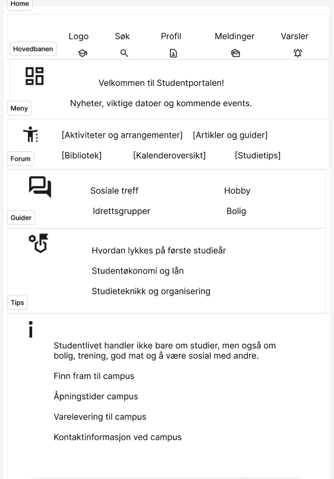
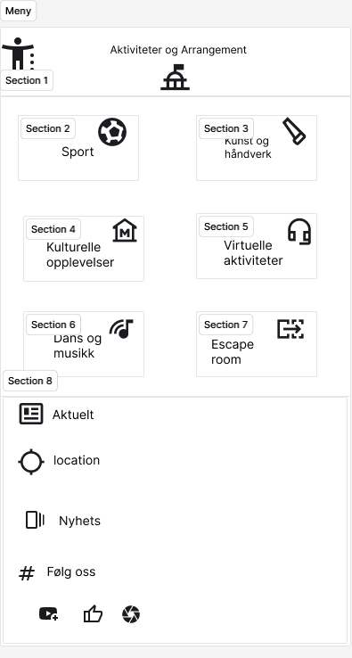
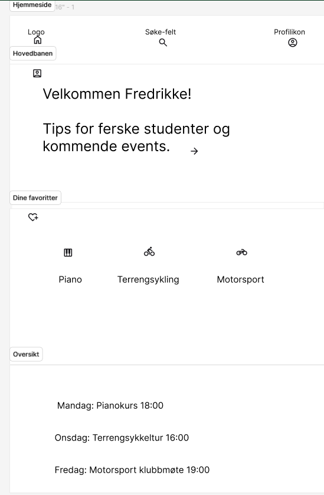

Informasjonsarkitektur (IA)
Informasjonsarkitektur handler om hvordan innholdet på nettsiden er organisert, navngitt og strukturert – slik at brukeren lett kan finne det de leter etter. For å tilpasse siden til vår persona, Fredrikke (20 år, student), har vi laget en enkel og logisk struktur basert på hennes behov for aktiviteter, tips og sosial tilhørighet.
Hjem
── Aktiviteter
─ Sport og trening (f.eks. terrengsykkelgruppe, treningssenter)
─ Kultur og arrangementer (piano- og musikkklubb, konserter, studentkroa)
─ Sosiale treff (språkkafé, quizkveld, frivillig arbeid, møteplasser for nye studenter)
── Tips
─ Studieorganisering (planlegging, balanse mellom skole og fritid)
─ Økonomitips for studenter (billige studenttilbud, matlaging på budsjett)
─ Mental helse og motivasjon (håndtere ensomhet, finne nettverk, holde motivasjonen oppe)
── Kontakt
─ Skjema for spørsmål (hjelp til å finne aktiviteter eller tips)
─ Studentgrupper og sosiale medier (lenker til klubber, Instagram, Facebook)Denne strukturen gjør at Fredrikke raskt kan finne relevante aktiviteter, få tips til studielivet, og komme i kontakt med andre studenter uten å måtte lete lenge.
Wireframes
Wireframes er skisser som viser plassering av innhold og funksjoner på nettsiden. De brukes tidlig i prosessen for å teste layout og brukerflyt før vi begynner å kode. For Fredrikke viser wireframene hvordan hun enkelt kan finne aktiviteter, tips til studielivet og måter å komme i kontakt med andre.
Skisser
På forsiden får hun tips om aktiviteter for nye studenter.

Appen har også funksjoner som søkefelt for å finne arrangementer, og en profilside der hun kan tilpasse informasjonen sin.
I oversikten har hun en enkel kalender som viser når arrangementene skjer, for eksempel pianokurs på mandag og klubbmøte for motorsport på fredag.
På favoritter der hun kan se sine aktiviteter, som hun liker best.
Enkel, oversiktlig og med fokus på aktiviteter, tips og sosial kontakt. Appen bidrar til at Fredrikke kan delta i aktiviteter, møte nye mennesker og være mer sosial rundt sine interesser.